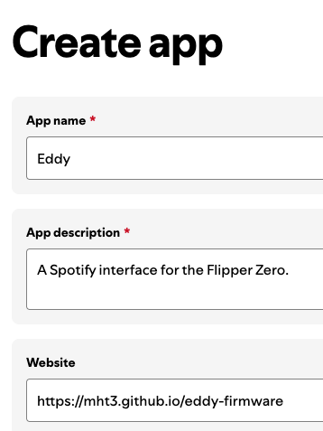
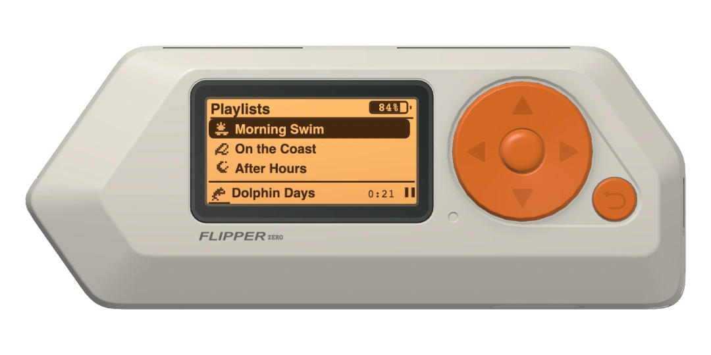

Eddy
Eddy Spotify setup
Create your Spotify developer app
- Open the developer dashboard. Sign in with the Spotify account you’ll use to develop your app. Spotify requires the app owner to have Premium in development mode. Open the Spotify Developer Dashboard.
- Choose Create app. Fill in these three fields.
- App name
- Eddy
- App description
- A Spotify interface for the Flipper Zero.
- Website
https://mht3.github.io/eddy-firmware

- Add the redirect URI. Paste
https://mht3.github.io/eddy-firmware/spotify/, including the final slash, and click Add. This is the return address Spotify uses after you approve or decline access. - Select Web API and save. Under the APIs and SDKs, check Web API. Review the developer terms, check the agreement box if you accept them, and choose Save.
- Save your Client ID to your Flipper. Open your app’s Settings and copy the Client ID. Keep the Client Secret private. In the Eddy installer, select Spotify under Extras, paste the ID into Spotify Client ID under Your build, then install or download your update. Open the installer.

Connect your Flipper
- After the update, open Apps → Spotify on your Flipper. Scan the code on its screen with your phone and open the link in your browser.
- Spotify opens automatically. Check the app name and requested permissions, then approve access. Spotify returns you to the connection page.
- With Bluetooth on and the Spotify app still open on the Flipper, select Choose Flipper in the browser and pick your device. Start a song in Spotify and leave the browser tab open while using the Flipper.
Try the Spotify demo!

Open Morning Swim, queue a track, or press Up in Now Playing to follow the timed lyrics I’ve included for the sample songs.